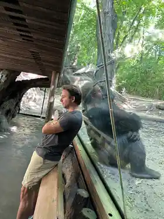

I’m from Boston. I’ve spent most of my life in New York.
Mom’s from New York. Pops from Boston. Sports canceled out.
Earlier in my career, I founded Echology, a mixed-reality and AI automixing company acquired by Sony. We worked with Grammy-, Pulitzer-, Emmy-, and Oscar-winning creators.
Since then, I’ve led product work at PayPal, Bloomberg, SimpleBet, NYSHEX, Splice, and Code.org across fintech, media, logistics, marketplaces, and education.
I’ve worked across very different domains, but I keep getting pulled toward the same kind of problem: messy situations where the real constraint is hard to see and the whole needs to cohere.
Get close enough to feel the friction. Step back far enough to see the system. Then decide what matters, what belongs, and what to make.
Then make it real.
I play guitar, go to live music and stand-up, read mostly older books, ride an enduro eMTB, and spend probably too much time making hand-brewed coffee.